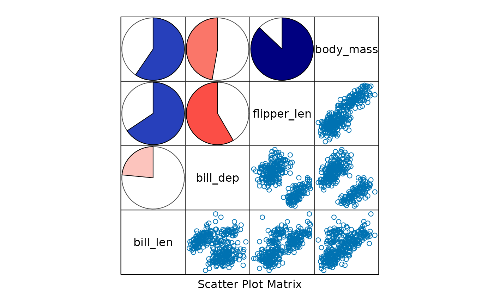
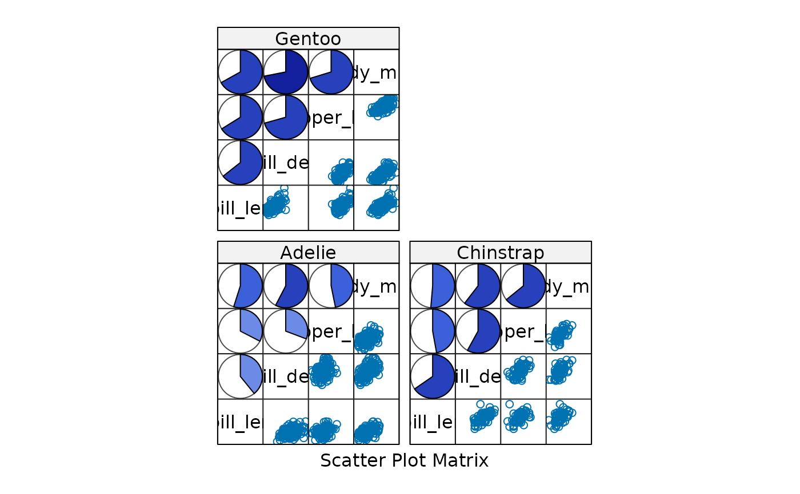
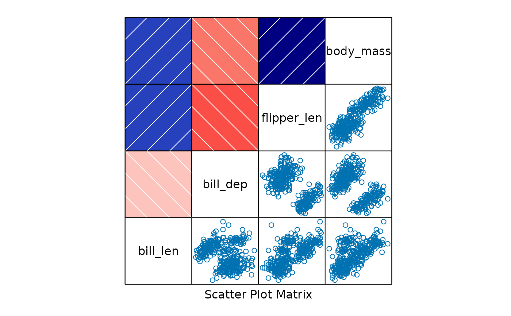
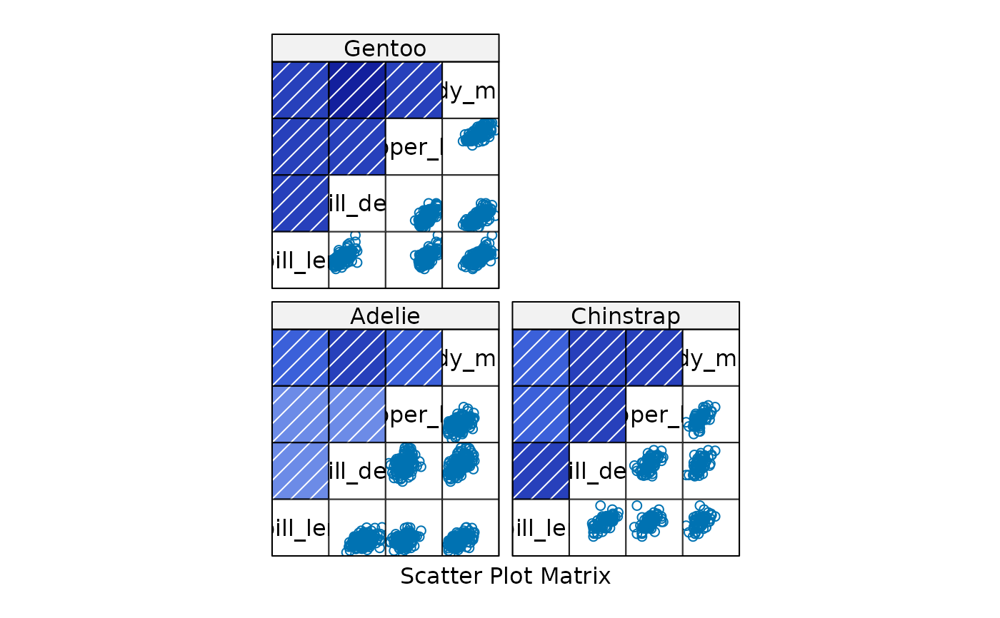
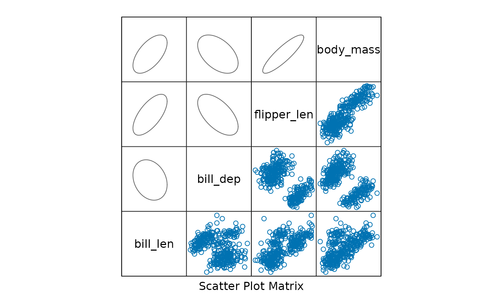
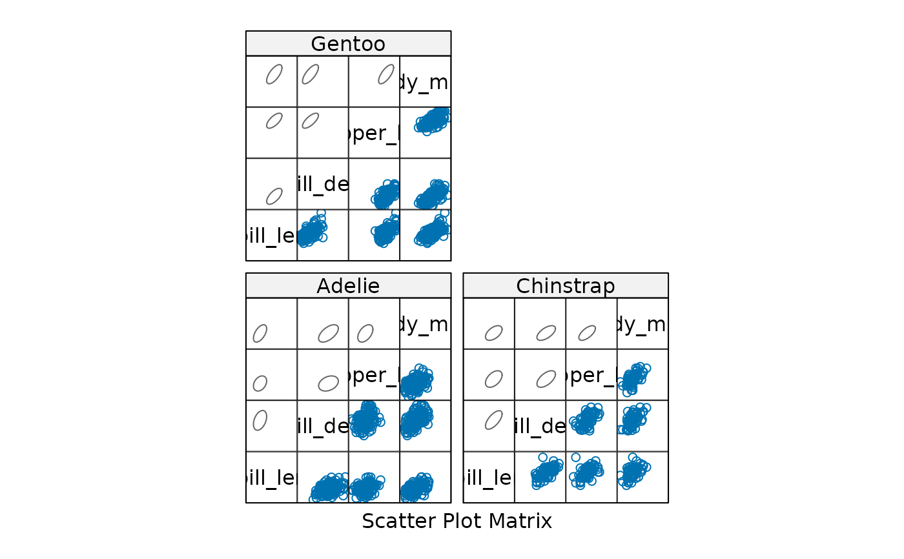

These functions provide custom panel methods for lattice::splom().
Arguments
- x
Numeric coordinates from levelplot.
- y
Numeric coordinates from levelplot.
- z
Correlation values from levelplot.
- subscripts
Subscripts for lattice panel. (not used)
- at
Breaks for color levels.
- cor.method
Correlation method (default "pearson").
- ...
Additional arguments passed to panel functions.
- col.regions
Color palette for shading (default NULL uses internal red white blue palette).
Details
splom_panel.pie Draws pie glyphs representing correlation coefficients,
omitting the diagonal.
splom_panel.shade Draws shaded rectangles with hash lines representing correlation
coefficients.
splom_panel.ellipse Draws ellipses representing correlation coefficients.
The position of the ellipse is determined by the position of the data,
and the shape of the ellipse is determined by the correlation.
Examples
library(lattice)
pengvars <- c("bill_len", "bill_dep", "flipper_len", "body_mass")
splom(~penguins[ , pengvars], upper.panel=splom_panel.pie, pscales=0)

splom(~penguins[ , pengvars]|penguins$species, upper.panel=splom_panel.pie, pscales=0)

splom(~penguins[ , pengvars], upper.panel=splom_panel.shade, pscales=0)

splom(~penguins[ , pengvars]|penguins$species, upper.panel=splom_panel.shade, pscales=0)

splom(~penguins[ , pengvars], upper.panel=splom_panel.ellipse, pscales=0)

splom(~penguins[ , pengvars]|penguins$species, upper.panel=splom_panel.ellipse, pscales=0)
